Step 1: Start with a square sheet of origami paper, color side down.
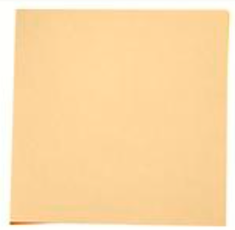Step 2: Fold the left half to the right half, making sure to align the edges. Then unfold.
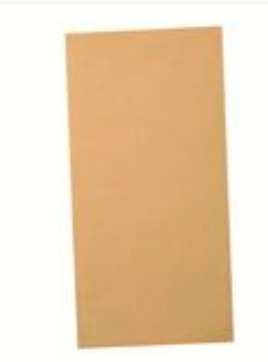Step 3: Fold in half diagonally by folding the bottom right corner to the top left corner. Then unfold again.
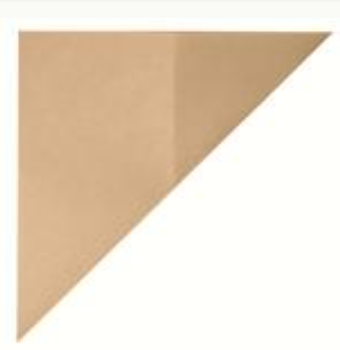Step 4: Fold in half diagonally once again by folding the bottom left corner to the top right corner. Unfold again.
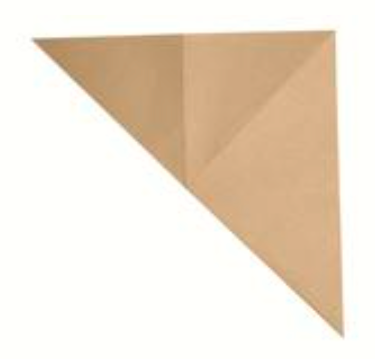Step 5: Fold the bottom half to the top half.
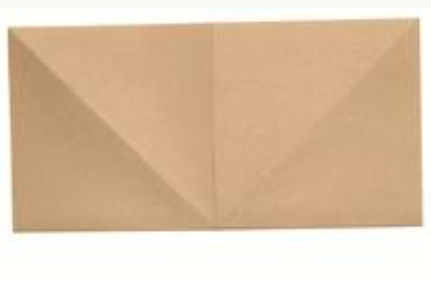Step 6: Fold in half again, then unfold.
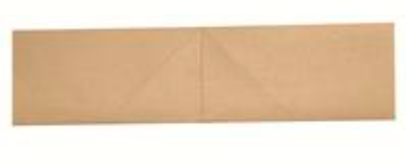Step 7: Fold the top left and right corners down as shown in the picture.
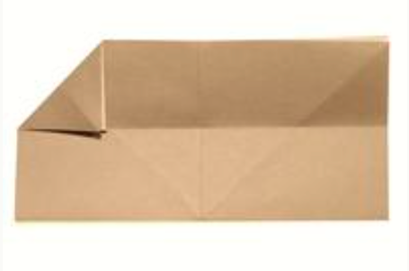Step 8: Fold in the left side creasing from the top center to the bottom left corner. Fold in the right side as well. You should now have a triangle like the picture.
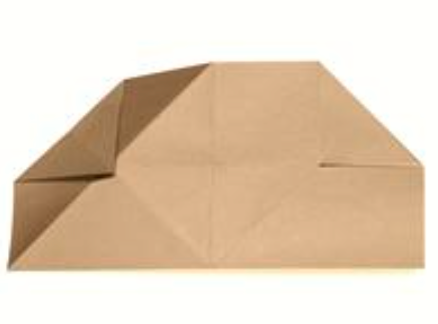Step 9: Turn the paper over to reveal a smooth triangle side.
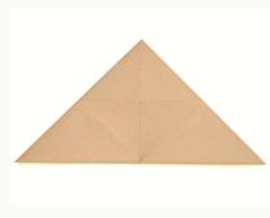Step 10: Fold the top down at a little below the premade horizontal crease.
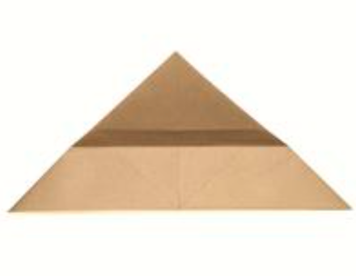Step 11: Fold the bottom corner up above the top edge like in the picture.
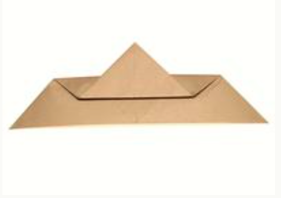Step 12: Turn the paper over.
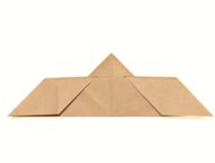Step 13: Fold down the top corner.
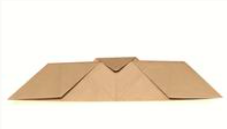Step 14: Mountain fold the figure in half.
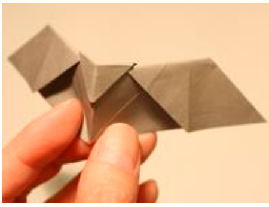Step 15: From the bottom left corner to where the triangle and trapezoid folds meet, fold the wing up diagonally.
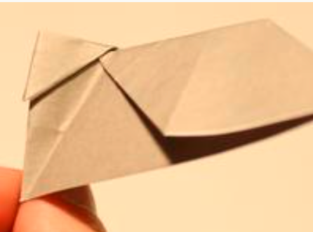Step 16: Diagonally fold the same wing so that the bottom edge of the runs along the center.
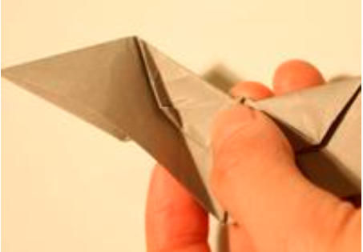Step 17: Turn over so we can fold the other wing.
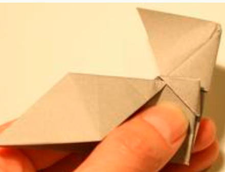Step 18: Fold the other wing diagonally creasing from the bottom corner to where the triangle and trapezoid folds meet.
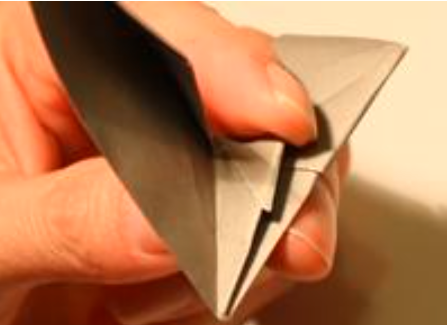Step 19: Now fold it back to match the other wing.
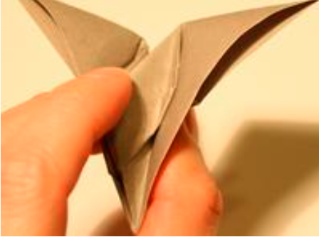Step 20: Spread out the wings.
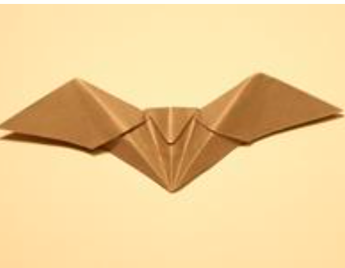Step 21: Place your thumb under the front flap of the both wings and push up to make it open.
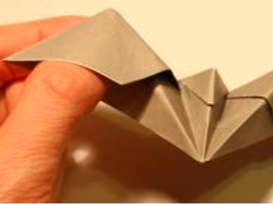Step 22: Diagonally crease the bottom part of the wings up like in the picture.
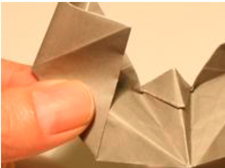Step 23: Now your bat should look as cool as this!